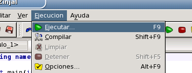
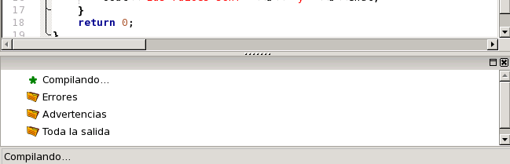

Para intentar ejecutar el programa presione F9, o seleccione la opción Ejecutar del menú Ejecutar.

Esta acción guarda el archivo (si aún no tiene nombre la hará en un directorio temporal), lo compila, y si la compilación es exitosa lo ejecuta. Aparecerá en la parte inferior de la ventana principal el Panel de Resultados del Compilador, en el cual se muestra el estado de la compilación y los resultados de la misma.

Debido a que el código copiado contiene un error (no se ha incluido la librería cmath para poder utilizar la función sqrt), el árbol de dicho panel desplegará la sección Errores mostrando un error similar a "'sqrt' was not declared in this scope".
Volver... Continuar...